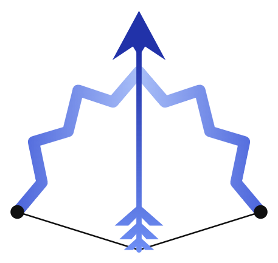
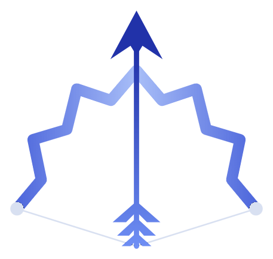

A real browser, headed by default
Not a scraper and not a hidden window. Chromium opens on your screen so you can watch every step — and because many signup flows detect and block headless browsers anyway.


Agentic orchestration that can use a browser
Provisioning a key. Standing up hosting. Clicking through a signup and copying the result back out. Arcaflame plans the whole project, delegates it to the cheapest model that can do each part — and when the next step is a web form, it opens a real browser and fills it in while you watch.
Available on
Connected to
See it running
The whole run in one terminal: the task graph, what each tier is costing, and where the budget stands — without a single line of subagent output scrolling past.
Screenshot goes here
The part with no endpoint
An agent that can only make HTTP calls stops at exactly the moment the work turns tedious — the console that needs a real click, the signup that fingerprints headless browsers, the key that only appears once on a page after you accept the terms.
“Click through the signup, accept the terms, copy the key.”
There is no headless endpoint for that sentence. It is a web flow, not an API call.
SO It uses the computer, like you would
Not a scraper and not a hidden window. Chromium opens on your screen so you can watch every step — and because many signup flows detect and block headless browsers anyway.
When the work is outside the browser it types, clicks and reads the screen through the OS itself — SendInput and GDI on Windows, ydotool on Linux.
A persistent profile, so it does not ask you to sign in again on every task. You log in once, in a window you can see, and the next run picks up where it left off.
AND Nothing happens off-screen
An append-only log at ~/.sleipnir/capability-audit.jsonl, fsynced per record and never rewritten. A tool that can type into any window is only reasonable if there is an honest record of what it typed.
When a credential is needed, the console prompts you in its own frame, injects the value directly and wipes it. No file, no pipe and no environment variable ever holds it — and keystrokes are logged by length, never content.
Host control is an opt-in extra: pip install -e ".[host]". Skip it and the orchestrator, the console and the whole test suite still run — a headless server has no use for a Chromium download.
It runs as you, with your permissions, using the same public input APIs an accessibility tool uses. Nothing is installed into the kernel and nothing asks you to elevate.
doctor reports exactly what your host will and will not allow before a run starts — including the windows it is not permitted to touch, rather than failing quietly halfway through.
The browser is yours while it works. Watch it, stop it, or finish a step by hand — it is a window on your desktop, not a service running somewhere you cannot see.
The property everything rests on
Delegation only saves money if subtask output never re-enters the orchestrator's context. So the plan lives on disk, and the orchestrator is re-invoked fresh each cycle with nothing but a compact, size-bounded manifest.
| Tasks in plan | Manifest tokens |
|---|---|
| 60 | 2,689 |
| 600 | 2,696 |
| 10,000 | 2,706 |
Multiply the work by 166× and the brain reads the same page. It is enforced by a test —
test_manifest_size_is_constant_in_task_count fails the build if a change
reintroduces growth.
What it does
Twelve of them, in the order a run meets them. No agent framework underneath any of it.
01 Plan
The planner turns one paragraph of intent into typed tasks with real dependencies, and validates the whole graph before a single token is spent.
Every task is labelled reason, code, mechanical or extract. The router maps each tier to the cheapest model that clears it — and explain prints why.
A backend order per tier. The shipped example keeps Claude first for reasoning and OpenRouter first for cheap mechanical work — so the tight window is spent on thinking.
02 Dispatch
claude -p and codex exec shell out to the official CLIs and inherit their credentials; the rest is plain HTTP against an OpenAI-compatible endpoint. No adapter runs an OAuth flow.
Readiness comes from the graph, not a queue: a concurrency cap, cancellation, timeouts and tree kill. Each attempt gets its own directory, so nothing leaks sideways.
Tasks carry checks that have to pass before the work counts. A task is not finished because a model said it was finished.
03 Control
Five-hour window accounting across providers, with automatic downshift to cheaper tiers before the wall — not an error after it.
Costs nothing while workers succeed. At a terminal impasse it gets the bounded manifest plus at most four urgent task specs — 24k characters, hard capped.
Blast radius is computed locally before anything is written. Routing-only retargets can auto-apply; semantic changes wait for apply-revision.
tui shows DAG, routing and budget. Dependency-free, offline in read-only mode, and it never prints subagent output.
results.jsonl, fsynced per record. Status is a pure fold of results over the plan, so a run resumes exactly where it stopped.
Process trees, file locking, raw console mode and input injection go through one platform layer picked at import — ydotool on Linux, SendInput and job objects on Windows, Quartz CGEventPost on macOS.
Get it
Arcaflame installs from source and borrows the provider CLIs you already have signed in. Nothing phones home.
git clone https://github.com/Glitch-spec266/Arcaflame
cd Arcaflame
uv venv --python 3.12 .venv
uv pip install --python .venv/bin/python -e .
.venv/bin/python -m pytest -qgit clone https://github.com/Glitch-spec266/Arcaflame
cd Arcaflame
uv venv --python 3.12 .venv
uv pip install --python .venv\Scripts\python.exe -e .
.venv\Scripts\python.exe -m pytest -qsleipnir plan "ship a REST API"
sleipnir tui --orchestrateThe CLI entry point is sleipnir (alias orch) until the rename lands in the package.
The claude and codex adapters use whatever those official CLIs are
already signed into. OpenRouter reads OPENROUTER_API_KEY. Browser control is
opt-in: pip install -e ".[host]".
CommandCheck acceptance checks execute shell commands out of
plan.json. A plan file is executable content. Do not run one from a source
you do not trust.